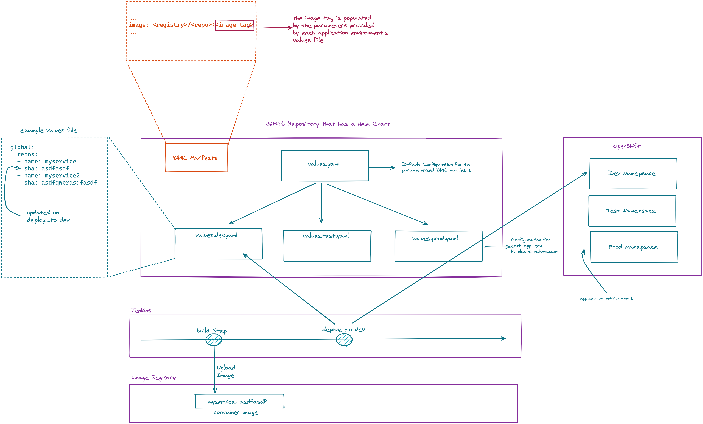

OpenShift¶
OpenShift is Red Hat's enterprise Kubernetes distribution.
This library allows you to perform deployments to static or ephemeral application environments with Helm.
Steps¶
| Step | Description |
|---|---|
deploy_to() |
Performs a deployment using Helm |
ephemeral(Closure body, ApplicationEnvironment) |
Creates a short-lived application environment for testing |
Overview¶

Configuration¶
The configurations for the OpenShift library can be specified at multiple levels. Given the additional layers of configuration the typical table of options would be less clear than examples, so it has been broken down per configuration portion.
OpenShift Location¶
The OpenShift location can be defined in the library spec or on a per application environment basis.
For example, it's common to have a cluster for lower environments with a separate cluster for production. You would specify this as follows:
application_environments{
dev{
short_name = "dev"
long_name = "Development"
}
test{
short_name = "test"
long_name = "Test"
}
prod{
short_name = "prod"
long_name = "Production"
openshift_url = "https://openshift.prod.example.com:8443"
}
}
libraries{
openshift{
url = "https://openshift.dev.example.com:8443"
}
}
With this configuration, https://openshift.dev.example.com:8443 would be used when deploying to dev and test
while https://openshift.prod.example.com:8443 would be used when deploying to prod.
Helm Configuration¶
Helm is used as the deployment mechanism to OpenShift.
Helm is a package manager and templating engine for Kubernetes manifests.
Using Helm, the typical YAML manifests used to deploy to Kubernetes distributions can be templated for reuse.
In this case, a different values file is used for each static application environment.
Deploy the Tiller Server¶
Instead of using Helm as a package manager by bundling the charts and deploying them to a chart repository, a configuration repository is used as the infrastructure as code mechanism.
Create Helm Configuration Repository¶
You'll need to create a GitHub repository to store the Helm chart for your application(s). See the Helm docs on provisioning a new chart for how to initialize the repository with the skeleton for your chart.
How you choose to build your Helm chart is up to you.
You can put every API object in the templates directory or have subcharts for each individual microservice.
All the library does is clone the GitHub repository and deploy the chart using the specified values file.
For most users, the only branch of the Helm configuration repository needed is the master branch.
However, if you want to use different branches for different application environments,
you can add a helm_chart_branch setting to your application environments in your pipeline config.
Values File Conventions¶
As container images are tagged using the Git SHA, SDP will clone your Helm configuration repository and update a key corresponding to the current version of each container image for each application environment.
As such, a certain syntax is required in your values file. You must have a repos global key.
SDP will automatically add elements for each repository to repos (assuming repos is a List already) and set their value to include the appropriate Git SHA.
Note Since YAML keys can't have hyphens or numbers, any hyphens in repository names will be replaced with underscores and numbers will be spelled out.
global:
repos:
- name: my_sample_application
sha: abcdefgh
- name: my_sample_application_two
sha: abcdef
- name: third_sample_application
sha: a1b2c3
You can add whatever other keys are necessary to appropriately parameterize your Helm chart.
Helm Configurations for the Library¶
The Helm configuration repository, GitHub credential, Tiller namespace, and Tiller credential can be configured globally in the library spec and overridden for specific application environments.
The values file used will default to values.${app_env.short_name}.yaml, but a different file can be selected through app_env.chart_values_file.
The name of the release will default to app_env.short_name, but can be set through app_env.tiller_release_name.
An example of Helm configurations:
application_environments{
dev{
short_name = "dev"
long_name = "Development"
chart_values_file = "dev_values.yaml"
}
test{
short_name = "test"
long_name = "Test"
tiller_release_name = "banana"
}
prod{
short_name = "prod"
long_name = "Production"
tiller_namespace = "rhs-tiller-prod"
tiller_credential = "rhs-tiller-prod"
}
}
libraries{
openshift{
helm_configuration_repository = "https://github.boozallencsn.com/Red-Hat-Summit/helm-configuration.git"
helm_configuration_repository_credential = "github"
tiller_namespace = "rhs-tiller"
tiller_credential = "rhs-tiller"
}
}
Promoting Images¶
It's often beneficial to build a container image once, and then promote that image through different application environments. This makes it possible to test the content of an image once in a lower environment, and remain confident that the results of those tests would be the same as an image is promoted. Promoting images also speeds up the CI/CD pipeline, as building a container image is often the most time-consuming part of the pipeline.
By default, the deploy_to() step of the OpenShift pipeline library will promote a container image if it can expect one to exist,
which is when the most recent code change was a merge into the given code branch.
The image would be expected to be built from an earlier commit, or while there was an open PR.
You can override this default for the entire pipeline by setting the promote_previous_image config setting to false.
You can also choose whether to promote images for each application environment individually through the promote_previous_image application_environment setting.
This application_environment setting takes priority over the config setting.
An example of these settings' usage:
application_environments{
dev{
short_name = "dev"
long_name = "Development"
promote_previous_image = false
}
prod{
short_name = "prod"
long_name = "Production"
}
}
libraries{
openshift{
helm_configuration_repository = "https://github.boozallencsn.com/Red-Hat-Summit/helm-configuration.git"
helm_configuration_repository_credential = "github"
tiller_namespace = "rhs-tiller"
tiller_credential = "rhs-tiller"
promote_previous_image = true // (1)
}
}
- note: making this setting true is redundant, since true is the default
Putting It All Together¶
OpenShift Library Configuration Options
| Field | Description | Default Value | Defined On | Required |
|---|---|---|---|---|
openshift_url |
The OpenShift Console address when specified per application environment | [app_env] |
if url isn't defined |
|
url |
The OpenShift Console address when specified globally | library spec | if openshift_url isn't defined |
|
helm_configuration_repository |
The GitHub Repository containing the helm chart(s) for this application | both | Yes | |
helm_configuration_repository_credential |
The Jenkins credential ID to access the helm configuration GitHub repository | both | Yes | |
tiller_namespace |
The tiller namespace for this application | both | Yes | |
tiller_credential |
The Jenkins credential ID referencing an OpenShift credential | both | Yes | |
tiller_release_name |
The name of the release to deploy | application environment | if [app_env].short_name isn't defined |
|
chart_values_file |
The values file to use for the release | [app_env] |
if [app_env].short_name isn't defined |
|
helm_chart_branch |
The branch of helm_configuration_repository to use | master |
[app_env] |
No |
promote_previous_image |
Whether to promote a previously built image | (Boolean) true |
both | No |
application_environments{
dev{
short_name = "dev"
long_name = "Development"
chart_values_file = "dev_values.yaml"
}
test{
short_name = "test"
long_name = "Test"
tiller_release_name = "banana"
}
prod{
short_name = "prod"
long_name = "Production"
tiller_namespace = "rhs-tiller-prod"
tiller_credential = "rhs-tiller-prod"
openshift_url = "https://openshift.prod.example.com:8443"
promote_previous_image = true
}
}
libraries{
openshift{
url = "https://openshift.dev.example.com:8443"
helm_configuration_repository = "https://github.boozallencsn.com/Red-Hat-Summit/helm-configuration.git"
helm_configuration_repository_credential = "github"
tiller_namespace = "rhs-tiller"
tiller_credential = "rhs-tiller"
promote_previous_image = false
}
}
External Dependencies¶
- OpenShift is deployed and accessible from Jenkins
- The helm configuration repository defines the application as it would be deployed to OpenShift
- Values files follow the convention for repository names & Git SHAs
- The values file has the key
globals.repo - That key is a list of maps, each with two keys:
name: the name of the source GitHub repositorysha: the Git SHA for the last commit
- These maps are added automatically so long as
global.reposis a list of maps - A Jenkins credential exists to access the helm configuration repository
- A Jenkins credential exists to log in with OpenShift CLI
- The pipeline-utility-steps plugin is installed on Jenkins (supplies the readYAML step)
Troubleshooting¶
Updates were rejected¶
Message: Updates were rejected because the remote contains work that you don't have locally.
This is usually caused by another repository pushing to the same ref.
You may want to first integrate the remote changes (for example: git pull ...) before pushing again.
Solution: Re-run the pipeline while no other pipeline jobs are running that would deploy to OpenShift.
Explanation: After deploying to Helm, the pipeline attempts to update the helm-configuration-repository with the latest Git SHA for the pipeline's source code repository. However, if in the time between checking out the Helm chart from Git and pushing updates, another pipeline pushes its own updates, then Git will throw an error.
Frequently Asked Questions¶
Is there a way to securely deploy OpenShift Secrets to an ephemeral environment?
Any secrets with the label ephemeral = true will be exported from the reference environment (for example: dev) to the new ephemeral environment.
Is GitHub required for the Helm configuration repository?
This library was developed and tested using GitHub to manage the Helm configuration repository, but any Git SCM solution should work as well.